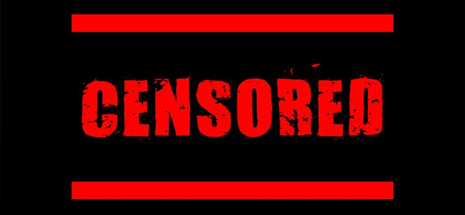

А. Шарий: Почему немцы пишут правду?
Несмотря на дежурные дифирамбы от стран «новой Европы», совершеннейшим образом не влияющие ни на что, Германия, страна «решающая», своего раздражения и лидером украинской нации, и общим положением дел в нашей стране, не скрывает.
Это раздражение выплескивается в публичную сферу, проступая жирными пятнами недовольства на страницах ведущих немецких газет. И странная тенденция – немцы говорят больше правды об Украине, чем… сами украинцы.
Но причина такого интересного явления лежит в плоскости вполне осязаемой и причина эта понятна. Стоило посадить несколько журналистов, как остальные тысячи (или десятки тысяч) сотрудников СМИ все поняли. Проще ваять фейки и рассказывать сказки собственному народу. Проще, уютнее, для шкуры безопаснее, а для брюха комфортнее.
Итак.
20 февраля «Der Tagesspiegel», нимало не стесняя себя в точности определений, назвала Яценюка «самым опасным противником Порошенко», а Порошенко предсказала скорую «раздавленность»:
«У Петра Порошенко много врагов на Украине, и есть опасения, что украинский президент будет "раздавлен" сторонами, придерживающимися противоположных взглядов на дальнейшее развитие ситуации в стране.
Одна часть людей призывает его к более решительным действиям против ополченцев, другая требует "закончить войну как можно скорее". Эти два фронта и могут в итоге "раздавить" Порошенко.
Самым опасным противником Порошенко на Украине считается премьер-министр Арсений Яценюк, который тоже хотел стать президентом».
Немецкие журналисты, не знакомые с украинскими понятиями уголовного преследования за высказывание своего мнения, режут нашего Президента без наркоза:
«После отступления украинской армии из Дебальцево давление на украинского президента продолжает расти. Народ требует четкого курса. Украинцы взывают к большей ясности в политических решениях Порошенко».
Таким образом, немцы четко дают понять – Порошенко придется отвечать за Дебальцево. Не помогут ни маразматические заявления СНБО о «гениальной операции», которая «войдет в учебники», ни засекречивание информации, как в случае с Иловайской трагедией.
«Der Spiegel» также разнес в пух и прах Порошенко, но уже по причине неисполнения последним своих обещаний:
«Порошенко ранее обещал провести масштабные реформы, чтобы подстегнуть экономику страны, однако ситуация лишь ухудшилась. Рецессия в стране усугубилась, национальная валюта стала еще слабее. Петр Порошенко обещал мир и экономические реформы.
Теперь он проиграл сражение за Дебальцево, и это только одно из поражений, которое ему придется объяснить украинцам. Прошлой весной украинский президент обещал "быструю победу" над ополченцами.
Украинский президент обещал продать свою компанию по производству кондитерских изделий, но так и не сделал этого. В связи с этим у Порошенко так и не получилось отделаться от имиджа олигарха»
Жестко. Недвусмысленно. Прямо и правдиво. Как будто это перед немцами ПАП обещаний не сдержал.
Я много раз говорил о том, что украинские политики по совершенно непонятной мне причине считают западных политиков, общественных деятелей, да и журналистов дураками. Такими себе простачками, которых можно накормить любой ахинеей, а они, разинув рты, проглотят.
«Deutsche Welle» продемонстрировал, что дурачками журналисты (следовательно, и политики) не являются. А заявления о величайших достижениях украинская власть может приберечь для «неискушенного отечественного потребителя»:
«Выходя год назад на улицы, люди требовали перемен в стране. Они хотели реформ. Они протестовали против коррупции и вседозволенности чиновников в эпоху президентства Януковича.
За минувший год новая власть не смогла даже минимально удовлетворить общественный запрос. Один из главных лозунгов Евромайдана «Бандитам — тюрьмы» так и остался нереализованным — никто из прежней власти так и не сел за решетку.
Качественных изменений в стране не произошло. Коррупционные схемы эпохи Януковича не разрушены».
Вот тут сказывается незнание немцами украинской специфики. Не только «не разрушены» — выстроены новые.
Более простые, позволяющие «делать дела» прямо перед носом у толпы, смирно вышагивающей с лозунгами, речевками и флагами многочисленными площадями страны.
А если кому-то придет в голову эти схемы в СМИ освещать (да не придет, это я просто фантазирую), то такой грамотей моментально станет «шпионом», «провокатором», «агентом Кремля». Для удобства, в агенты Кремля теперь зачисляются ВСЕ критикующие власть.
22 февраля «Die Welt» также высказалось о «Правительстве реформ»:
«Украинское правительство сейчас почти полностью сосредоточено на противостоянии с Россией и на просьбах о западной помощи, при этом совершенно забыв о реформировании страны»
Вспомнили и о Порошенко, превращающемся в какого-то пафосного актера, с придыханием изрекающего пустые банальности, но не делающем, по сути, вообще ничего для страны:
«Петр Порошенко часто выступает как патриот в униформе, а не как реформатор. Во всех статьях, которые он пишет для зарубежных СМИ, и во всех интервью, которые он дает иностранной прессе, о необходимости проведения внутренних реформ он упоминает только в самом конце.
Причем делает это дежурно — как обязательный к выполнению пункт. Реформы явно не являются его настоящей страстью.
23 февраля «Die Zeit» сообщает о падении рейтинга Порошенко:
«Многие украинцы по-прежнему снисходительно относятся к своему президенту, поскольку тот подает себя как человека военного и патриота, однако поддержка Порошенко падает.
По данным соцопроса, проведенного компанией Research and Branding group c 26 января по 6 февраля, уровень поддержки действий Порошенко с августа прошлого года снизился на 12%, до 45%. Недовольны президентом 46% украинцев – в сентябре этот показатель был на уровне 29%».
Ну и надо же – немцы вспомнили президенту Украины то, что сами украинцы ему не вспоминают:
«Ни одно предвыборное обещание не было выполнено. Борьба с коррупцией затянулась, некоторые чиновники были уволены, но приговоров никому не вынесено. Безвизовый режим с ЕС, который Порошенко анонсировал на 1 января 2015 года, отсутствует.
Украинцев настораживает и тот факт, что вопреки своим обещаниям президент так и не продал кондитерскую фабрику Roshen. Похоже, это подтверждает убежденность в том, что политика на Украине – это только бизнес»
Сотрудник Фонда Карнеги за международный мир Балаш Ярабик также отметил страсть украинской власти к раздаче обещаний, которые исполнять… необязательно:
«Одно невыполненное обещание сменяется следующим – идет ли речь о Донбассе, реформах или коррупции. Правящая элита по-прежнему не в состоянии общаться с людьми так, как они этого заслуживают после Майдана: честно и достойно»
28 февраля от «ARD» досталось не только президенту, но и украинской армии. Той самой армии, которую отечественные политики всерьез называли «одной из самых сильных на континенте»:
«В Берлине возлагали большие надежды на Порошенко: вступая в должность президента Украины, он обещал урегулировать конфликт на востоке страны мирным путем.
Теперь, спустя десять месяцев, в Берлине царит сильное разочарование. Во время переговоров в Минске Порошенко оставил своих западных союзников в неведении относительно слабости украинской армии.
Возможно, и сам Порошенко не был осведомлен о реальном положении дел, что, впрочем, также не создает о нем благоприятного впечатления.
В результате украинские военные потерпели крах в "дебальцевском котле": солдаты деморализованы, множество жизней потеряно совершенно напрасно. Сам Порошенко при этом заявил, что "горд и счастлив, что является верховным главнокомандующим таких вооруженных сил»
И здесь немцы обошли украинцев по уровню преподнесения правды, объективной, а не раздутой и гиперболизированно-утопической информации. Оно и понятно. Немцев за правду не садят.
И Председателя Мюнхенской конференции по безопасности Вольфганга Ишингера за ВОТ ЭТИ слова СБУ в каталажку не бросит:
«Мы имеем дело с разлагающейся и более не способной сражаться армией»
Журналистов «ARD» вот за ЭТИ слова об украинских добровольческих батальонах не измочалят битами перед входом в редакцию, а саму редакцию не сожгут:
«…они не считают себя обязанными соблюдать закон и международные соглашения и не подчиняются Киеву».
Это попросту поразительно — немецкие СМИ говорят правду, а мне, даже не живущему в Украине, это кажется невероятным. Нас слишком быстро отучили говорить правду. Принимать людей, говорящих правду, как людей необычных. Странных.
Просто представьте, что стало бы со СМИ и журналистами в нашей стране после подобного рода публикаций. Представили?
А мне, «агенту всех разведок мира», «кремлевскому выкормышу», «провокатору» и «персоне нон грата в странах, друзьях Украины» и представлять ничего не надо. Как говорится, «до этого уже дожили», посмотрим, что будет дальше…
Анатолий Шарий